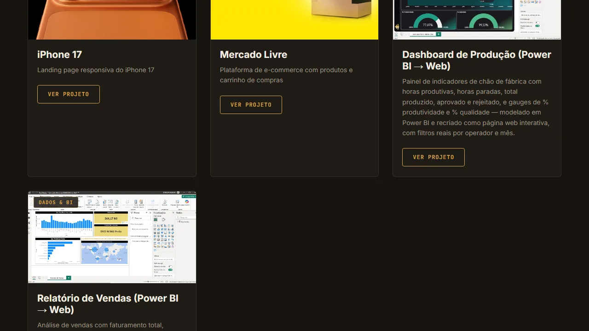
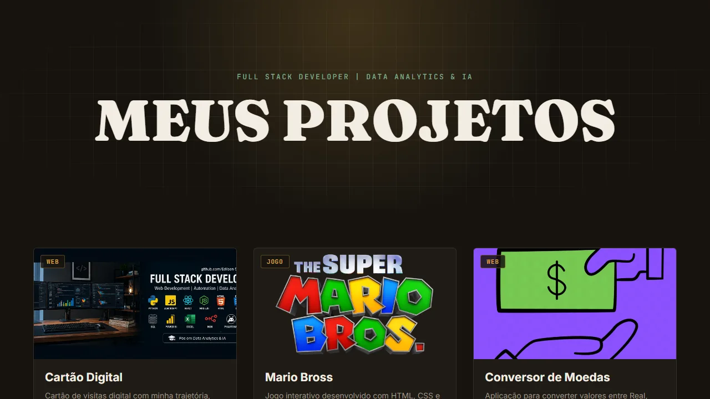
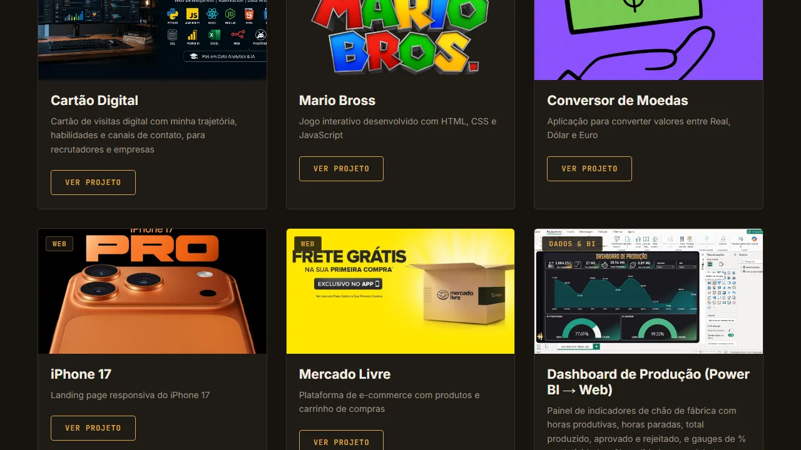

Central de Crédito e Cobrança
Painel de cobrança que mostra por quem começar a ligar, com risco por cliente, previsão de caixa e régua de cobrança. Demonstração com dados fictícios.
- Dados & BI
- Web



Full Stack Developer | Data Analytics & IA. Uma seleção dos meus melhores projetos e trabalhos.
Painel de cobrança que mostra por quem começar a ligar, com risco por cliente, previsão de caixa e régua de cobrança. Demonstração com dados fictícios.
Jogo interativo desenvolvido com HTML, CSS e JavaScript.
Aplicação para converter valores entre Real, Dólar e Euro.
Landing page responsiva do iPhone 17.
Plataforma de e-commerce com produtos e carrinho de compras.
Painel de indicadores de chão de fábrica com horas produtivas e paradas, total produzido, aprovado e rejeitado, e gauges de produtividade e qualidade. Modelado em Power BI e recriado como página web interativa, com filtros por operador e mês.
Análise de vendas com faturamento total, quantidade por marca, evolução mensal por ano e faturamento por continente. Modelado em Power BI e recriado como página web interativa, com filtros por ano e marca.
Sistema desktop em Python para controle de produtos, movimentações, usuários, relatórios e indicadores de estoque.
Análise preditiva de evasão de clientes bancários com Python, tratamento de outliers via IQR e cálculo de Information Value (IV).
Aplicativo de streaming totalmente funcional, pronto para produção, 100% construído com Claude Code.
Landing page de barbearia premium com agendamento online, galeria de cortes, depoimentos e chatbot de atendimento.
GPS de rotas direto no navegador: busque um destino, veja o trajeto e o tempo estimado e siga a navegação, sem instalar nada. Mapa com trânsito em tempo real.
Site institucional de pisos industriais de alta resistência: soluções, obras e blog, com rolagem animada e pedido de diagnóstico.
Gostou de algum projeto? Fale comigo pelo WhatsApp ou conheça o meu site.